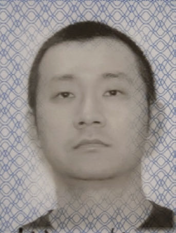

Miao Kong

Summary
An energetic and customer service focused IT support Specialist with 10 years’ experience in virtual and onsite
support for the finance industry, technology and government. Specialized in enterprise level server,
application, automate, end user computing, leveraging ITIL change management and incident and problem processes
to resolve issues.
Education
2002 - 2006
Wuhan University of Science and Technology
Work Experience
2019-2020
WBM Technologies – SCCM(MECM) Administrator(EUC Tier 3)
- Working in Desktop Engineering Team as Tier 3 to support multiple clients(FCC, Saskpower, Sasktel,
Westmoreland).
- Work effectively with Tier 2 to solve tickets and help build KB documents.
- Manage end-users' computers, Corp-owned, BYOD Mobile devices, Surface hubs using SCCM and Intune ensuring
device compliance and corp data secure.
- Support SCCM co-management with CMG environment.
Skills
- Microsoft Windows Server 2000, 2003, 2008, 2012,2016, 2019
- Microsoft SQL Server 2008, 2012,2016
- C#, PowerShell, SQL
- Microsoft Visual Studio
- Azure, Intune, MDM, MAM
- BeyondTrust Bomgar
- Windows 7,8,10